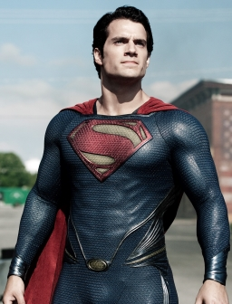

My favorite superhero
Meet my favorite superhero;Superman
Superman is a fictional superhero created by Jerry Siegel and Joe Shuster, first published by DC Comics in 1938. Born Kal-El on the doomed planet Krypton, he was sent to Earth as a baby and raised in Kansas as Clark Kent. In Metropolis, he uses his superhuman abilities to protect humanity.
As the archetypal superhero, Superman popularized the genre and established its conventions. His signature red and blue suit, flowing cape, and "S" shield have made him a global icon of truth, justice, and hope.
Origins and Powers
Hailing from the advanced alien world of Krypton, Kal-El was sent to Earth by his biological parents just before the planet exploded. His spaceship crash-landed in rural Kansas, where he was adopted by Jonathan and Martha Kent. Growing up on a farm, he developed strong moral values and later moved to the city of Metropolis to work as a journalist for the Daily Planet .
Because his alien cells absorb radiation from Earth's yellow sun, he possesses extraordinary powers. His core abilities include:
- Superhuman strength, speed, and invulnerability: Capable of immense physical feats and impervious to most conventional harm.
- Superhuman strength, speed, and invulnerability: Capable of immense physical feats and impervious to most conventional harm.
- Sensory and visual powers: Includes X-ray vision, microscopic vision, heat vision, and superhuman hearing.
- Flight: The ability to defy gravity and travel at supersonic or faster-than-light speeds.
- Breath abilities: The capacity to expel freezing gusts or hurricane-force winds.
Personality and Weaknesses
Superman's defining characteristic is his profound respect for life and his refusal to kill, stemming from his upbringing and his belief in the inherent goodness of humanity.
His primary weakness is Kryptonite, a radioactive mineral composed of the debris from his destroyed home planet, which drains his powers and can be lethal to him. Additionally, because he is a solar-powered being, prolonged absence from a yellow sun or exposure to magic can leave him vulnerable.
